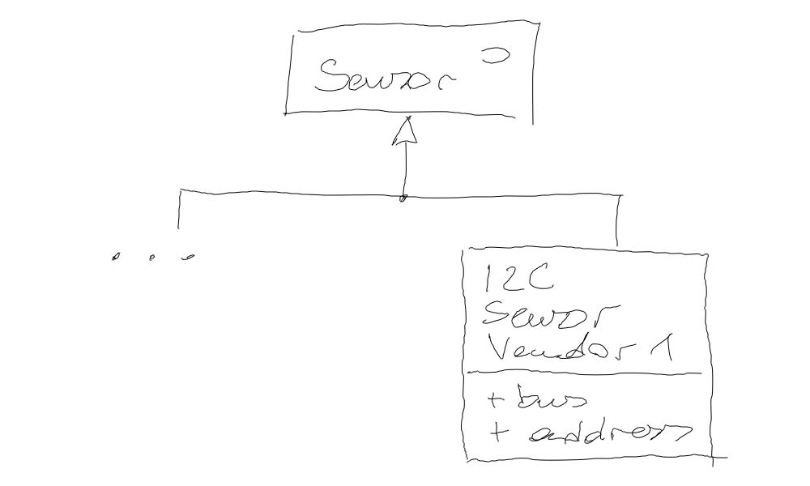

Exercise: Abstract Factory¶
I2C Sensor Subhierarchy¶
Imagine a company currently deploys I2C sensors of vendor 1. These sensor have their place in the sensor hierarchy,
{kind=link}
Objects of that sensor type, I2CSensor_Vendor1, are currently
directly instantiated in the code like so,
I2CSensor_Vendor1 sensor(/*bus*/ 2, /*address*/ 0x37);
// ...
Suddenly one day, due to pricing policies of that vendor, it becomes necessary to make a switch from that vendor to another vendor, vendor 2. At least, that switch should be possible, and a prototype has to be created.
An existing sensor implementation I2CSensor_Vendor1, is pushed
down into a subhierarchy like so …
{kind=link}
Problem: I2C Sensor Instantiation¶
In current code, instantiation of the venerable I2CSensor_Vendor1
class is distributed all over the place. It is not currently on
schedule to refactor and pull out instantiations into a central
location. One would rather pour if or #ifdef garbage all
across the software than taking the risk of damage and/or project
slip.
Solution: Factory Objects¶
A change that is reasonable, though, is to centralize the millions of
if cascades,
std::unique_ptr<I2CSensor> sensor = create_i2c_sensor(/*bus*/ 1, /*address*/ 0x37);
Better yet, introduce a singleton factory object,
std::unique_ptr<I2CSensor> sensor = I2CSensorFactory::instance().create(/*bus*/ 1, /*address*/ 0x37);
Requirements¶
Lets not speak out the singleton word for a moment, and implement the following Abstract Factory hierarchy …

… which passed the following tests:
#include <gtest/gtest.h>
#include <sensor-i2c-factory-vendor1.h>
#include <sensor-i2c-vendor1.h>
TEST(abstract_factory_suite, instantiate_vendor1)
{
I2CSensorFactory_Vendor1 i2c_factory_vendor1;
I2CSensorFactory* factory = &i2c_factory_vendor1; // <--- is-a I2CSensorFactory
I2CSensor* i2c_sensor = factory->create(/*bus*/ 1, /*address*/ 0x37); // <--- returns an I2CSensor
ASSERT_EQ(i2c_sensor->bus(), 1);
ASSERT_EQ(i2c_sensor->address(), 0x37);
ASSERT_TRUE(dynamic_cast<I2CSensor_Vendor1*>(i2c_sensor)); // <--- ... from Vendor1
Sensor* a_sensor = i2c_sensor; // <--- and is-a (of course) Sensor
(void)a_sensor;
}
#include <gtest/gtest.h>
#include <sensor-i2c-factory-vendor2.h>
#include <sensor-i2c-vendor2.h>
TEST(abstract_factory_suite, instantiate_vendor2)
{
I2CSensorFactory_Vendor2 i2c_factory_vendor2;
I2CSensorFactory* factory = &i2c_factory_vendor2; // <--- is-a I2CSensorFactory
I2CSensor* i2c_sensor = factory->create(/*bus*/ 1, /*address*/ 0x37); // <--- returns an I2CSensor
ASSERT_EQ(i2c_sensor->bus(), 1);
ASSERT_EQ(i2c_sensor->address(), 0x37);
ASSERT_TRUE(dynamic_cast<I2CSensor_Vendor2*>(i2c_sensor)); // <--- ... from Vendor1
Sensor* a_sensor = i2c_sensor; // <--- and is-a (of course) Sensor
(void)a_sensor;
}
Notes¶
The concrete sensor objects are never seen by user code. Neither is the concrete factory.
⟶ code does not depend on implementations, but rather on abstractions.
⟶ Decoupled!
If the instantiation is pu tinto the factory’s
.cppfile, we even reduce compile time.